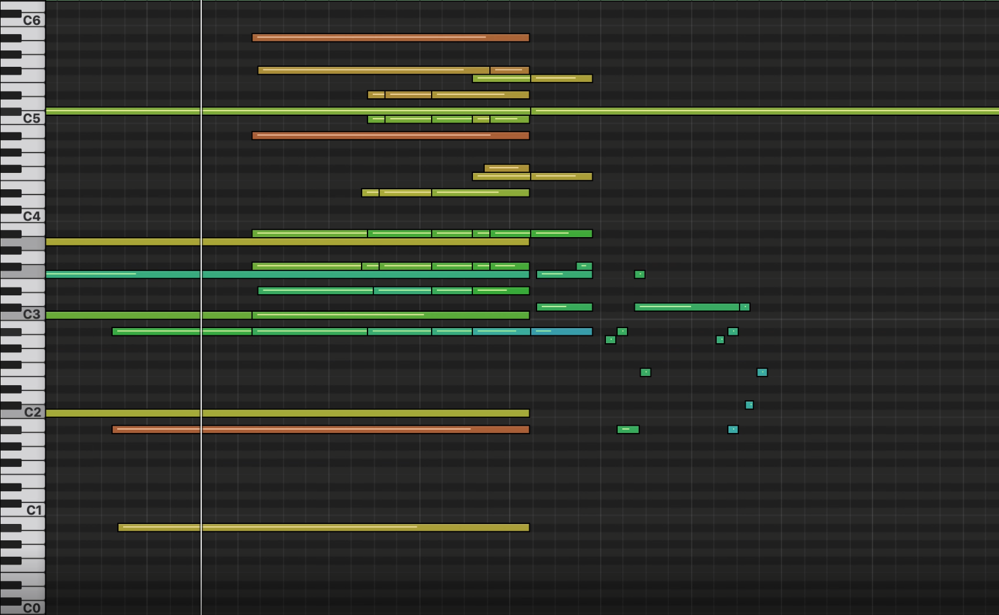

아래의 영상들은 유튜브 연주 영상을 딥러닝을 사용한 알고리즘을 통해 자동으로 채보(연주된 음표를 추측) 하고 각 음표의 세기, 페달을 밟고 떼는 위치를 추정하여 자동 연주 피아노를 통해 재현한 영상입니다. 실제 연주 영상와 맞추어 재현된 연주를 함께 재생해서 연주가 얼마나 자연스럽게 재현되고 있는지 확인 할 수 있습니다.
조성진: Chopin Scherzo in B flat minor Op. 31
김광민, 이루마: 학교가는 길
손열음: Liszt La Campanella
조성진 Scherzo 연주 일부의 스펙트로그램. Generated using Chrome musiclab
우리가 듣는 모든 음악, 모든 소리는 공기의 떨림입니다. 빠르게 떨리는 소리는 높은소리, 느리게 떨리는 소리는 낮은 소리로 인식되며 스펙트로그램을 통해 소리의 주파수 별 성분을 보면, 어떤 소리가 나는지 대략적으로 알 수 있습니다. 예를들어, 위에 있는 스펙트로그램을 보면 소리를 듣지 않아도 낮은 두번의 음들이 나오고, 조금씩 올라가는 높은 음들이 크게 나올 것이라는 것을 알 수 있습니다.
하지만 실제로 우리가 듣는 것들은 더 복잡합니다. 위 짧은 영상에서도 많은 음표가 울리고 있고, 만약 숙련된 음악가라면 어떤음을 쳤는지, 얼마나 세게, 얼마나 짧게 쳤는지와 같은 것들을 들을 수 있을것입니다. 위에서 연주된 정확한 음들을 피아노 건반을 따라 표시하면 아래와 같이 됩니다 (색깔은 세기를 나타냅니다)
조성진 Scherzo 연주 일부의 피아노 롤
우리는 딥러닝을 이용해서 위의 스펙트로그램으로 부터 연주된 음표들을 구별해내는 알고리즘을 학습시켰습니다. 연주된 음표의 음고, 세기, 길이를 정확히 예측한다면 이 피아노 롤을 다시 피아노를 통해 연주하면 원래 연주와 아주 유사한 연주를 재현 할 수 있게 됩니다. 위의 데모들은, 이렇게 예측된 피아노 롤에 페달을 추가로 예측하여 자동연주 피아노를 통해 재현한 영상들 입니다. 자세한 알고리즘은 아래의 논문을 참조해 주세요.
연주 정보를 담은 피아노 롤은 연주를 재연하는 데 쓰이는 것 뿐 아니라 연주자가 구체적으로 어떻게 연주를 했는지 분석할 수 있게 해줍니다. 연주 정보를 모아 좋은 연주를 구성하는 요소는 무엇인지, 연주의 스타일이란 어떻게 구성되는지 실마리를 찾는 작업이 다음 단계이며, 궁극적으로는 음악 연주에서 발휘되는 인간의 창의성을 이해하고 인간과 인공지능이 함께 연주할 수 있는 미래를 향하고 있습니다.
권태균 ilcobo2@gmail.com
이 연구는 삼성전자 미래기술육성센터의 ICT 창의과제 지원을 받아 이루어졌습니다. (SRFC-IT1702-12)
과학적 출판에 인용하는 경우에는 ISMIR 2020에 출판될 "POLYPHONIC PIANO TRANSCRIPTION USING AUTOREGRESSIVEMULTI-STATE NOTE MODEL" 논문을 인용해주시면 감사하겠습니다. (링크 추가 예정)